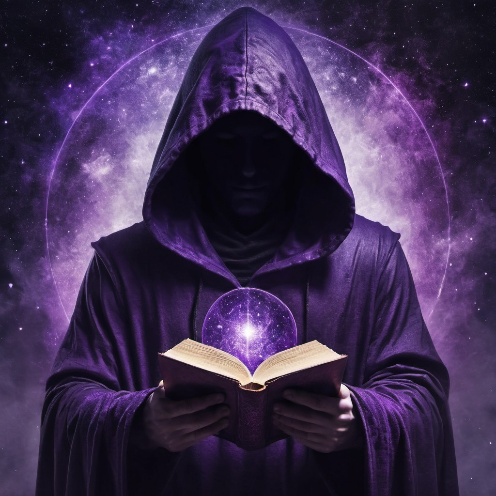
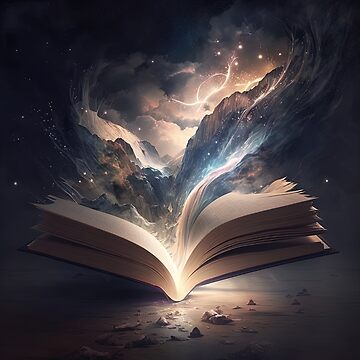

Dungeon Master
As a Dungeon Master, I love to create immersive worlds by combining the power of a rich story with the tactile experience of full-scale battle maps, miniatures, and custom 3D-printed objects. My games focus heavily on narrative depth, allowing the players to shape the world with their choices, but I also relish a good dungeon crawl, filled with traps and riddles. These puzzles, while seemingly simple, often stump even the sharpest minds at the table, proving that a well placed riddle can be just as challenging as any monster!

Loremaster Everille
Being a Dungeon Master and Lorekeeper for a world like Khorvaguad is both a thrilling challenge and a sacred duty. It’s not just about guiding adventurers through forgotten dungeons or across war-torn plains; it’s about holding the weight of centuries of history, where every blade of grass whispers a forgotten legend, and every storm could be the echo of an ancient god's rage. You become the keeper of tales older than time itself, weaving together the lives of kings and rebels, heroes and villains, with the fates of your players. It’s about knowing that every choice, every word, and every roll of the dice could awaken old powers, shift the course of empires, or plunge the world back into chaos. As a storyteller, you breathe life into the myths of this grand realm, turning its endless lore into something your players not only explore but shape with their own hands.

World Crafter
Welcome to Sylvandria, an ancient realm where the threads of fate are woven by gods, heroes, and the forces of magic. Beyond the tumultuous waters of the Broken Sea and the towering peaks of the Spine of the World lies Khorvaguad, a land whose history is etched in the blood and valor of countless generations. It is here, on this storied continent, that the fabled Age of Heroes dawned—where kingdoms rose, legends were forged, and the world itself trembled beneath the weight of destiny.
A century ago, the flames of war engulfed Khorvaguad in the War of Ashes, when the Holy Rhalm Empire sought to expand, carving through the sacred forests of the Citari Elves. But in their darkest hour, the tides turned. From the depths of the sea, the mighty nation of Khor arose, led by the indomitable Lady Khorva, Daughter of the Sea. Her love for the elven princess Nilette forged a union that not only ended the war but heralded an era of peace enforced by the power of Khor’s relentless fleets and arcane might. Their vow united kingdoms, and their names would echo through eternity.
Yet peace is fragile, and even the mightiest of realms can be challenged. In the shadow of this golden age, a rebellious genius named Azif Hazred Philetas rose against the iron rule of Khorva, igniting a rebellion that shook the foundations of the continent. His pursuit of forbidden power culminated in a confrontation that would change the course of history—a battle against an ancient, dark god whose power threatened to consume the world. Only Khorva’s ultimate sacrifice spared the land from ruin, leaving behind a legacy as eternal as the mountains.
This is Khorvaguad—a land where ancient powers stir beneath the surface, where heroes rise to claim their destinies, and where the echoes of forgotten gods whisper through the winds. What might you find, in a world as boundless as your ambition, where legends are not born—they are forged.